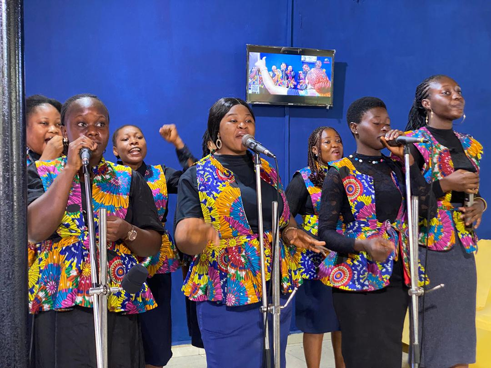
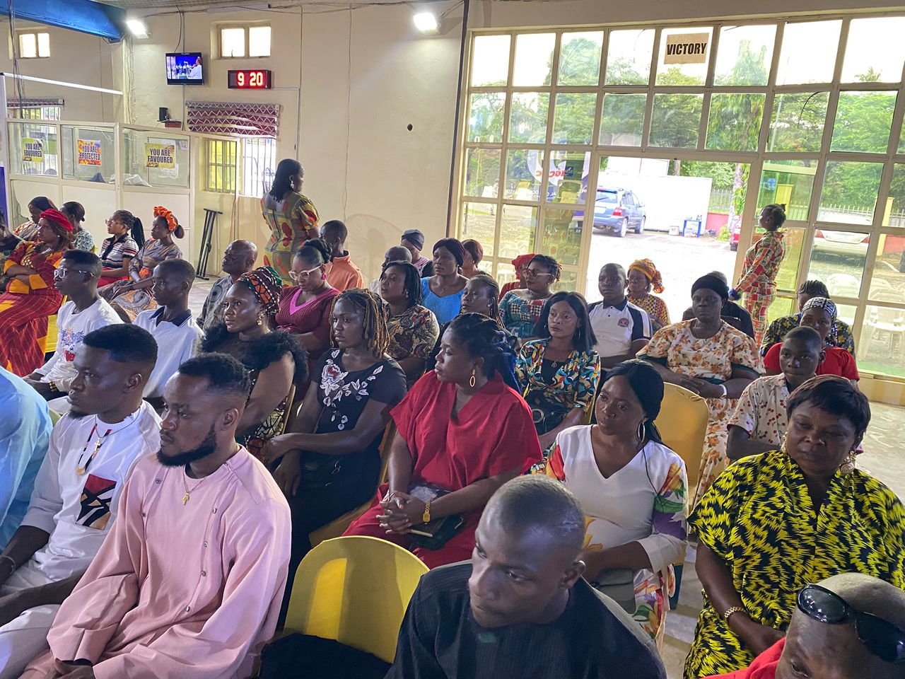
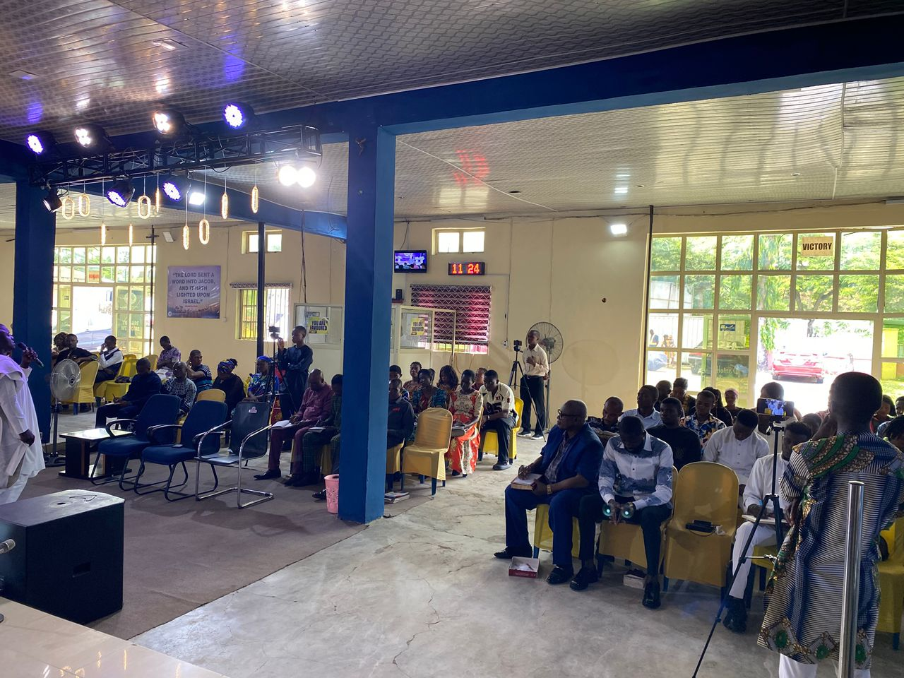

Visit Us
Join us at 98 Murtala Mohammed Highway, Calabar, Cross River State, Nigeria, for worship, teaching, prayer, and fellowship.
Experience the spoken Word of God, prophetic encounters, heartfelt worship, and kingdom results through Word Diet International Gospel Church.
Whether you are visiting for the first time, returning to fellowship, or looking for a spiritual family, WDIGC is committed to raising believers through the Word and the power of the Holy Spirit.
Join us at 98 Murtala Mohammed Highway, Calabar, Cross River State, Nigeria, for worship, teaching, prayer, and fellowship.
Follow sermons, updates, and prophetic moments across YouTube, Facebook, Instagram, X, and TikTok.
Grow with a church family focused on the Word, worship, evangelism, prophetic direction, healing, and kingdom impact.
Unwavering belief in the power of God's Word and His promises.
Empowering every believer to discover and fulfill their divine calling.
Building a strong spiritual family through love and fellowship.



Word Diet International Gospel Church (WDIGC) is a prophetic global ministry mandated to raise a standard for God's people through the spoken Word of God, raising generational leaders filled with the Holy Spirit and manifesting kingdom results worldwide.
Our heartbeat is transformation through worship, prayer, the Word, evangelism, and the ministry of the Spirit.
Catch recent teachings from Apostle Omotosho Tope Joseph and stay strengthened through the Word.
Uniting the corporate body of Christ across targeted age groups and expressions for fellowship, fire, and spiritual dominion.
Raising a godly generation. Children learn scriptures and early discipleship in a fun, holy, and safe environment.
Fanning the spiritual fire of young adults. Activating career speed and leadership mandates in holiness.
Empowering single believers to live a life of focus, purity, and purpose while aligning relationship keys.
Virtuous women and intercessory pillars building strong family altars and mentoring younger ladies.
Equipping men as spiritual priests of their homes, dynamic kingdom leaders, and financial stewards.
Daily devotion, weekly services, major fasting programs, celebrations, conferences, and end-of-year gatherings.
Monday to Friday - Morning prayer (Alone with God), personal devotion, and spiritual alignment to start the day in God's presence.
Evangelism outreach on Mondays, Fridays, and Saturdays. Wednesday Communion Service and midweek prophetic encounters for spiritual empowerment.
21 Days Prayers & Fasting (January), Mid-Year Prophetic Fasting (July), Annual Conference (September), and Cross Over Service (31st December).
Monthly thanksgiving, Easter Service, Church Anniversary (21st May), Women Conference (28th June), Children's Celebration (August), and Night of Worship (December).
Women's Love Feast (Second Sunday of December), Yearly Thanksgiving Service (Last Sunday of December), and Cross Over Service (31st December).
Your giving is not just a donation, it is a spiritual partnership in advancing the gospel, transforming lives, and expanding the kingdom of God.